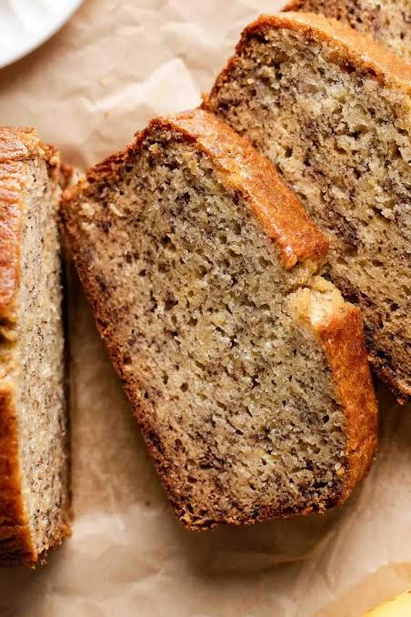

sweet treat
Banana Bread
Delicious Bread With a Banana Flavour
A classic banana bread recipe made with bananas, cinnamon and walnuts.
What You'll Need
Ingredients
Banana Bread
- 125g butter, softened
- ½ cup (113g) caster sugar
- ½ cup (110g) brown sugar
- 2 eggs
- 2 cups (300g) flour
- 1 tsp baking powder
- 1 tsp cinnamon
- 1 tsp baking soda
- 1 cup (250ml) milk
- 2 ripe bananas, mashed
- ¼ cup (25g) walnuts, chopped (optional)
Time To Cook
Method
Prepare the Mixture
Preheat the oven to 180°C.
Grease and line a loaf tin with baking paper.
Beat the softened butter, caster sugar and brown sugar together until light and creamy.
Add the eggs one at a time, mixing well after each addition.
Sift together the flour, baking powder, cinnamon and baking soda in a separate bowl.
Gradually add the dry ingredients to the butter mixture, alternating with the milk.
Mix until just combined.
Add the Banana
Mash the ripe bananas with a fork until mostly smooth.
Gently fold the mashed bananas into the mixture.
Fold through the chopped walnuts if including them (optional).
Pour the mixture into the prepared loaf tin and smooth the top.
Bake the Banana Bread
Place the loaf in the oven and bake for approximately 1 hour.
Check that the loaf is cooked through by inserting a skewer into the centre.
It should come out clean or with a few moist crumbs.
Remove the banana bread from the oven and allow it to cool in the tin for a few minutes.
Transfer to a wire rack to cool before slicing and serving.
Recipe & Image Source
Credits
This Banana Bread recipe was originally published by Chelsea.
Recipe by Chelsea Sugar.
The image used on this page is sourced from Eats Delightful.